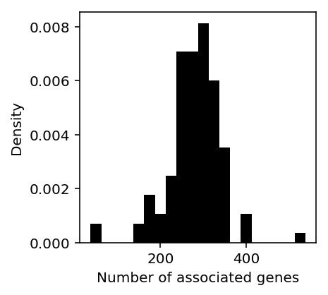
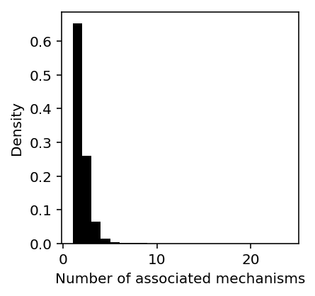
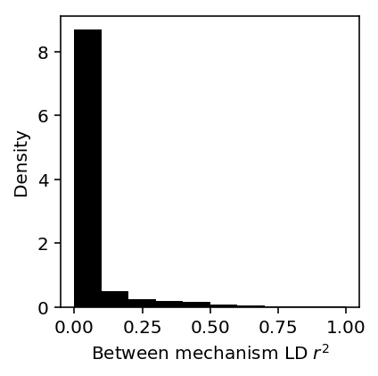
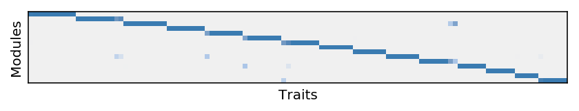
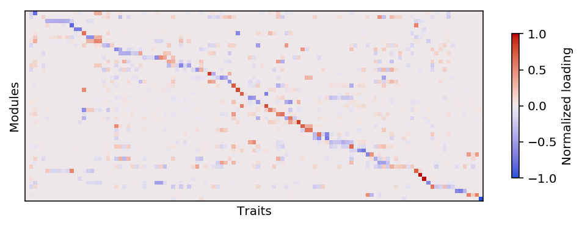

Tissue-specific TWAS analysis
Table of Contents
Introduction
Here, we analyze tissue-specific TWAS of 114 traits (Barbeira et al. 2018)
based on fqtl models.
Setup
import glob import itertools as it import os.path import numpy as np import pandas as pd import scipy.linalg as sl import scipy.special as sp import scipy.stats as st
%matplotlib inline %config InlineBackend.figure_formats = set(['retina'])
import colorcet import matplotlib import matplotlib.pyplot as plt plt.rcParams['font.family'] = 'Nimbus Sans'
Results
Read the TWAS summary statistics
For each trait, assign each gene/mechanism to the best LD block.
<<imports>> import os i = os.environ['SLURM_ARRAY_TASK_ID'] (pd.read_csv(f'/project2/mstephens/aksarkar/projects/gtex_fqtl_2018/docs/share/twas/chr{i}.twas.bed.gz', sep='\t') .groupby(['trait', 'ensg', 'factor']) .apply(lambda x: x.loc[np.abs(x['z']).idxmax]) .reset_index(drop=True) .to_csv(f'/broad/hptmp/aksarkar/fqtl/twas/chr{i}-twas.txt.gz', compression='gzip', sep='\t', index=None))
sbatch --partition=broadwl --mem=8G --time=40:00 --job-name=assign-twas -a 1 #!/bin/bash source activate fqtl module load htslib module load plink python /project2/mstephens/aksarkar/projects/gtex_fqtl_2018/assign-twas.py
Extract the significant hits.
<<imports>> def bh(chunk, key, alpha=0.05): N = chunk.shape[0] temp = chunk.sort_values(key) keep = temp[key] < alpha * np.arange(1, N + 1) / N return temp[keep] twas_sig = (pd.concat([pd.read_csv(f'/broad/hptmp/aksarkar/fqtl/twas/chr{i}-twas.txt.gz', sep='\t') for i in range(1, 23)]) .groupby(['trait']) .apply(bh, key='p.val') .reset_index(drop=True)) twas_sig.to_csv('/project2/mstephens/aksarkar/projects/gtex_fqtl_2018/data/twas-significant.txt.gz', compression='gzip', sep='\t')
sbatch --partition=broadwl --mem=32G --time=10:00 --job-name=extract-twas #!/bin/bash source activate fqtl module load htslib module load plink python /project2/mstephens/aksarkar/projects/gtex_fqtl_2018/extract-twas.py
Read the significant hits.
twas_sig = pd.read_csv('/project2/mstephens/aksarkar/projects/gtex_fqtl_2018/data/twas-significant.txt.gz', sep='\t', index_col=0)
Plotting code
Reorder matrix columns to get similar columns next to each other.
def newick(children, root, N): if root < N: return [root] else: left, right = children[root - N] res = newick(children, left, N) res.extend(newick(children, right, N)) return res def order(L): N = L.shape[0] m0 = sklearn.cluster.AgglomerativeClustering(compute_full_tree=True).fit(L) return newick(m0.children_, 2 * (N - 1), N)
Descriptive statistics
Count the total number of trait-gene associations.
twas_sig.groupby(['trait', 'ensg']).first().shape[0]
31551
Plot the distribution of associations per trait.
genes_per_trait = twas_sig.groupby('trait')['ensg'].agg(lambda x: len(set(x))).reset_index() plt.clf() plt.gcf().set_size_inches(3, 3) plt.hist(genes_per_trait['ensg'], bins=20, color='k', density=True) plt.xlabel('Number of associated genes') plt.ylabel('Density')
Text(0, 0.5, 'Density')

Count the number of gene associations with more than one mechanism.
twas_sig.groupby(['trait', 'ensg'])['factor'].apply(lambda x: len(set(x)) > 1).sum()
10931
Plot the distribution of number of gene-factor associations across traits.
gene_factor_assoc = twas_sig.groupby(['trait', 'ensg'])['factor'].agg(len).reset_index()
plt.clf() plt.gcf().set_size_inches(3, 3) plt.hist(gene_factor_assoc['factor'], bins=gene_factor_assoc['factor'].max() - 1, color='k', density=True) plt.xlabel('Number of associated mechanisms') plt.ylabel('Density')
Text(0, 0.5, 'Density')

Plot the distribution of average between mechanism LD for genes where multiple factors were associated.
between_ld = (gene_factor_assoc .reset_index() .apply(lambda x: ld_distribution.loc[x['ensg'], 'between'].max() if x['ensg'] in ld_distribution.index and x['factor'] > 1 else 0, axis=1))
plt.clf() plt.gcf().set_size_inches(3, 3) plt.hist(between_ld, bins=10, color='k', density=True) plt.xlabel('Between mechanism LD $r^2$') plt.ylabel('Density')
Text(0, 0.5, 'Density')

Count the proportion of genes with independent mechanisms (\(r^2 < 0.1\)).
(between_ld < 0.1).sum() / between_ld.shape[0]
0.8699388577385816
Comparison to whole blood TWAS
Count the number of TWAS associations driven by mechanisms with high posterior probability on whole blood.
blood_twas_sig = (fqtl_tis .merge(keep_gene_factors) .query('tis == "Whole_Blood"') .query('lodds > 2.94') [['ensg', 'factor', 'ld']] .merge(twas_sig, left_on=['ensg', 'factor', 'ld'], right_on=['ensg', 'factor', 'ld.idx']))
blood_twas_sig.shape[0]
12321
Look at the traits with blood TWAS genes.
len(set(blood_twas_sig['trait']))
113
GOM of TWAS
B = (~np.isnan(twas_sig.pivot_table(index='trait', columns='ensg', values='z'))).astype(int)
obj = np.inf opt = None for trial in range(10): m = skd.NMF(n_components=15, beta_loss=1, solver='mu', init='random', l1_ratio=1, alpha=1).fit(B) if m.reconstruction_err_ < obj: opt = m obj = m.reconstruction_err_ L = opt.transform(B) F = opt.components_ L *= F.sum(axis=1) L /= L.sum(axis=1, keepdims=True) F /= F.sum(axis=1, keepdims=True)
plt.clf() plt.gcf().set_size_inches(7, 5) W = L.T[:,order(L)] plt.imshow(W[np.argsort(W.argmax(axis=1))], cmap=colorcet.cm['blues'], vmin=0, vmax=1) plt.xlabel('Traits') plt.xticks([]) plt.ylabel('Modules') plt.yticks([])
([], <a list of 0 Text yticklabel objects>)

Report the trait modules.
(pd.concat({i: pd.DataFrame.from_dict({'trait': B.index[L[:,i] > .5], 'loading': L[:,i][L[:,i] > .5]}) for i in range(L.shape[1])})
.to_csv('/project2/mstephens/aksarkar/projects/gtex_fqtl_2018/data/nmf.txt.gz', sep='\t'))
Report the gene modules.
def top_genes(topics, num_genes=100): res = {} for k, t in topics.iteritems(): # Dey et al. Eq. 3-4 https://journals.plos.org/plosgenetics/article?id=10.1371/journal.pgen.1006599 kl = t.values.reshape(-1, 1) * np.log((t.values.reshape(-1, 1) + 1e-8) / (topics.values + 1e-8)) + topics.values - t.values.reshape(-1, 1) kl = np.delete(kl, k, axis=1) res[k] = pd.DataFrame(kl, index=B.columns).min(axis=1).sort_values(ascending=False).head(n=num_genes) return pd.concat(res).reset_index()
res = top_genes(pd.DataFrame(F.T, index=B.columns), num_genes=100) res.to_csv('/project2/mstephens/aksarkar/projects/gtex_fqtl_2018/data/twas-gom-topics.txt.gz', compression='gzip', sep='\t', index=None)
Compute pathway enrichments for the gene modules using PANTHER.
function z { zcat /project2/mstephens/aksarkar/projects/gtex_fqtl_2018/data/twas-gom-topics.txt.gz | \ awk -vm=$1 '$1 == m {print $2}' | \ curl -s http://www.pantherdb.org/webservices/garuda/tools/enrichment/VER_2/enrichment.jsp -F organism="Homo sapiens" -F geneList=@- -F enrichmentType=fullGO_process -F type=enrichment -F correction=FDR >/broad/hptmp/aksarkar/fqtl/twas/panther-topic-$1.txt } export -f z parallel -j5 z ::: $(seq 0 14)
Read the pathway enrichments.
panther_results = (pd.concat([pd.read_csv(f'/broad/hptmp/aksarkar/fqtl/twas/panther-topic-{i}.txt', sep='\t', index_col=None) for i in range(topics.shape[1])], keys=range(topics.shape[1])) .reset_index(level=0))
panther_results.to_csv('/project2/mstephens/aksarkar/projects/gtex_fqtl_2018/data/twas-gom-pathways.txt.gz', sep='\t', index=None)
(panther_results[panther_results['FDR'] < 0.05] .groupby('level_0') .apply(lambda x: pd.Series(list(set(x['Name'])))) .reset_index(level=1, drop=True) .to_csv('/project2/mstephens/aksarkar/projects/gtex_fqtl_2018/data/twas-gom-pathways-fdr-05.txt.gz', sep='\t', header=True))
Sparse factor analysis of TWAS
Construct the matrix of TWAS association \(z\)-scores for genes with at least one significant hit. Take the best \(z\)-score across mechanisms and LD blocks.
<<imports>> <<read-twas-sig>> twas = pd.concat([pd.read_csv(f'/broad/hptmp/aksarkar/fqtl/twas/chr{i}-twas.txt.gz', sep='\t') for i in range(1, 23)]) Z = (twas[twas['ensg'].isin(set(twas_sig['ensg']))] .groupby(['ensg', 'trait']) .apply(lambda x: x.loc[np.abs(x['z']).idxmax])['z'] .reset_index() .pivot_table(index='ensg', columns='trait', values='z')) Z.to_csv('/project2/mstephens/aksarkar/projects/gtex_fqtl_2018/data/twas-z-matrix.txt.gz', compression='gzip', sep='\t')
sbatch --partition=broadwl --mem=16G --job-name=extract-twas-z #!/bin/bash source activate fqtl python /project2/mstephens/aksarkar/projects/gtex_fqtl_2018/extract-twas-z.py
Fit flash.
<<imports>> <<r-imports>> Z = pd.read_csv('/project2/mstephens/aksarkar/projects/gtex_fqtl_2018/data/twas-z-matrix.txt.gz', sep='\t', index_col=0) data = flashr.flash_set_data(Z.values) fit = flashr.flash(data, var_type='constant', backfit=True) with open('flash-result.pkl', 'wb') as f: pickle.dump(fit, f)
sbatch --partition=broadwl -n1 -c28 --exclusive --mem=16G --time=4:00:00 --job-name=flash #!/bin/bash source activate fqtl module load htslib module load plink python /project2/mstephens/aksarkar/projects/gtex_fqtl_2018/apply-flash.py
Read the results.
Z = pd.read_csv('/project2/mstephens/aksarkar/projects/gtex_fqtl_2018/data/twas-z-matrix.txt.gz', sep='\t', index_col=0) # Explicitly call numpy2ri instead of pandas2ri because flashr doesn't support # data frames: https://github.com/stephenslab/flashr/issues/94 data = flashr.flash_set_data(rpy2.robjects.numpy2ri.numpy2ri(Z.values)) with open('/broad/hptmp/aksarkar/fqtl/flash-result.pkl', 'rb') as f: fit = pickle.load(f)
Count the number of factors.
K = np.array(fit[0])
K
array([47], dtype=int32)
Recover the modules.
Z = pd.read_csv('/project2/mstephens/aksarkar/projects/gtex_fqtl_2018/data/twas-z-matrix.txt.gz', sep='\t', index_col=0) gene_modules = pd.DataFrame(np.array(fit[3].rx2('l')), index=Z.index) trait_modules = pd.DataFrame(np.array(fit[3].rx2('f')), index=Z.columns)
Estimate lfsr for the factors and loadings.
M = 5000 T = flashr.flash_f_sampler(data, fit[fit.names.index('fit')], np.arange(1, K + 1))(M) trait_pr_pos = np.stack([np.sign(np.array(T[i])) == 1] for i in range(M)).mean(axis=0).reshape(trait_modules.shape) trait_pr_neg = np.stack([np.sign(np.array(T[i])) == -1] for i in range(M)).mean(axis=0).reshape(trait_modules.shape) trait_lfsr = np.fmin(trait_pr_pos, trait_pr_neg)
pd.DataFrame(trait_lfsr, index=Z.columns).to_csv('/project2/mstephens/aksarkar/projects/gtex_fqtl_2018/data/twas-trait-lfsr.txt.gz', sep='\t', compression='gzip')
trait_lfsr = pd.read_csv('/project2/mstephens/aksarkar/projects/gtex_fqtl_2018/data/twas-trait-lfsr.txt.gz', sep='\t').values
Report the trait modules.
(pd.concat({i: trait_modules[i][trait_lfsr[:,i] < 0.01] for i in range(trait_modules.shape[1])})
.reset_index()
.groupby('level_0')
.apply(lambda x: x.loc[x[0].abs().sort_values(ascending=False).index])
.reset_index(drop=True)
.to_csv('/project2/mstephens/aksarkar/projects/gtex_fqtl_2018/data/twas-trait-modules.txt.gz', compression='gzip', sep='\t'))
plt.clf() plt.gcf().set_size_inches(7, 5) W = np.where(trait_lfsr < 0.01, trait_modules, 0) module_order = order(W.T) trait_order = np.argsort(np.abs(W[:,module_order]).argmax(axis=1)) plt.imshow(W.T[:,trait_order][module_order], cmap=colorcet.cm['coolwarm'], vmin=-1, vmax=1) cb = plt.colorbar(shrink=0.35) cb.set_label('Normalized loading') plt.xlabel('Traits') plt.xticks([]) plt.ylabel('Modules') plt.yticks([]) plt.tight_layout()

Report the gene modules.
(pd.concat({i: gene_modules[i][np.abs(gene_modules[i]) > 0.05] for i in range(gene_modules.shape[1])})
.reset_index()
.groupby('level_0')
.apply(lambda x: x.loc[x[0].abs().sort_values(ascending=False).index])
.reset_index(drop=True)
.to_csv('/project2/mstephens/aksarkar/projects/gtex_fqtl_2018/data/twas-gene-modules.txt.gz', compression='gzip', sep='\t'))
Compute pathway enrichments for the gene modules using PANTHER.
function z { zcat /project2/mstephens/aksarkar/projects/gtex_fqtl_2018/data/twas-gene-modules.txt.gz | \ awk -vm=$1 '$2 == m {print $3}' | \ curl -s http://www.pantherdb.org/webservices/garuda/tools/enrichment/VER_2/enrichment.jsp -F organism="Homo sapiens" -F geneList=@- -F enrichmentType=fullGO_process -F type=enrichment -F correction=FDR >/broad/hptmp/aksarkar/fqtl/twas/panther-module-$1.txt } export -f z z 0
Read the pathway enrichments.
panther_results = (pd.concat([pd.read_csv(f'/broad/hptmp/aksarkar/fqtl/twas/panther-module-{i}.txt', sep='\t', index_col=None) for i in range(47)], keys=range(47)) .reset_index(level=0))
panther_results.to_csv('/project2/mstephens/aksarkar/projects/gtex_fqtl_2018/data/twas-pathways.txt.gz', sep='\t', index=None)
(panther_results[panther_results['FDR'] < 0.05] .groupby('level_0') .apply(lambda x: pd.Series(list(set(x['Name'])))) .reset_index(level=1, drop=True) .to_csv('/project2/mstephens/aksarkar/projects/gtex_fqtl_2018/data/twas-pathways-fdr-05.txt.gz', sep='\t', header=True))
K-means clustering of TWAS
Z = pd.read_csv('/project2/mstephens/aksarkar/projects/gtex_fqtl_2018/data/twas-z-matrix.txt.gz', sep='\t', index_col=0)
m1 = sklearn.cluster.KMeans(n_clusters=20).fit(Z.T.fillna(0)) pd.concat({i: pd.Series(Z.columns[m1.labels_ == i]) for i in range(m1.n_clusters)}).reset_index().to_csv('/project2/mstephens/aksarkar/projects/gtex_fqtl_2018/data/twas-k-means.txt.gz', compression='gzip', sep='\t')